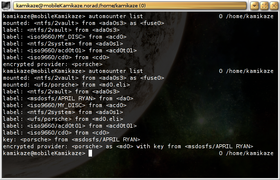

1.136. USB Automount ohne HAL¶
Dieser Artikel beschreibt das Einrichten von sysutils/automounter, um damit externe Datenträger automatisch zu mounten.
1.136.1. über Automounter¶
Automounter ist ein Shell-Skript, das GEOM Labels verwendet, um den
AutoMounter Daemon amd(8) dynamisch zu konfigurieren und die nötigen
Symlinks einzurichten. AMD bietet die Möglichkeit über einen Symlink
einen Mount anzustoßen, aber die Einrichtung ist recht kompliziert und
es ist notwendig, für jeden Datenträger einen recht kryptischen Eintrag
in der Datei /etc/amd.map zu machen und Verzeichnisse zum Mounten
und Symlinks für AMD anzulegen. Automounter erspart diese Arbeit, in dem
eine amd.map dynamisch erzeugt wird. Die nötigen Verzeichnisse und
Links werden auch automatisch mit angelegt. Letzteres normalerweise im
Verzeichnis /media, wer jedoch HAL und Automounter parallel
verwenden will, sollte dies anpassen.
1.136.1.1. Vor- und Nachteile gegenüber HAL¶
AMD und damit Automounter funktionieren unabhängig von einem Desktop Environment, sogar komplett ohne grafische Oberfläche. Es erspart auch das manuelle Unmounten. Es erspart jedoch nicht zu prüfen, ob ein externer Datenträger noch gemountet ist bevor er entfernt wird. Das Risiko eines Datenverlustes besteht weiterhin. Wer Automounter eine Weile benutzt hat, gewöhnt sich aber recht bald daran, alle Zugriffe auf solche Geräte bei Nicht-Bedarf sofort zu beenden. Damit fällt auch das Risiko, ein gemountetes Laufwerk zu entfernen.
Der große Vorteil von Automounter ist auch der größte Nachteil. Die
fehlende Anbindung an eine grafische Oberfläche. Dadurch fehlt jegliches
visuelle Feedback, ob ein Datenträger gerade verwendet wird. Die einzige
Möglichkeit das zu überprüfen ist, mit den Kommandos
mount,automounter list mounted, automounter mlist mounted
oder einem Monitoring-Programm, das die eingebundenen Datenträger
anzeigt.
1.136.2. Einrichtung¶
Die grundsätzliche Einrichtung ist zunächst recht einfach. Jedoch gibt es zahlreiche Möglichkeiten Automounter an die eigenen Bedürfnisse anzupassen.
1.136.2.1. grundlegende Einrichtung¶
Nach erfolgter Installation muss erst einmal in die Datei
/etc/rc.conf die Zeile:
automounter_enable="YES"
eingetragen werden.
<note>Frühere Versionen dieses Artikels haben empfohlen Einträge in der
Datei /etc/devd.conf vorzunehmen. Das ist seit automounter-1.4.1
nicht mehr erforderlich und vorhandene Einträge sollten entfernt
werden.</note>
1.136.2.2. Automounter ohne Neustart starten¶
 Nachdem die grundlegende Einrichtung vorgenommen wurde, kann Automounter mit folgendem Befehl aktiviert werden:
{kind=link}
# /etc/rc.d/devd restart
# /usr/local/etc/rc.d/automounter start
1.136.2.3. Benutzerzugriff auf FAT-Dateisysteme¶
Da FAT-Dateisysteme (msdosfs) keine Benutzerverwaltung unterstützen, übernehmen sie die Zugriffsrechte des Mountpunkt. Automounter wiederum erzeugt den Mountpunkt mit den Rechten des Devices welches gemountet wird. Um also Zuriffsrechte zu gewähren müssen die Zugriffsrechte auf das entsprechende Device geändert werden. Wie Zugriffsrechte für Devices gesetzt werden ist im Artikel Mounten als Benutzer beschrieben.
Mit folgendem Eintrag in der Datei /etc/devfs.rules erlangen alle
Benutzer, die Mitglieder der Gruppe operator sind, die vollen
Zugriffsrechte auf FAT-Dateisysteme.
add path 'msdosfs/*' mode 0660 group operator
Nicht vergessen nach der Änderung den Befehl:
# /etc/rc.d/devfs restart
auszuführen.
1.136.2.4. Mount-Optionen festlegen¶
Die Standard-Mount-Optionen sind rw,noatime,noexec. Mit
mount_options können diese in der Konfigurationsdatei verändert
werden. Es können aber auch Optionen spezifisch für bestimmte
Dateisystemtypen angegeben werden. Um Beispielsweise FAT-Partitionen als
UTF-8 codiert zu behandeln genügt folgende Zeile in der
automounter.conf:
msdosfs_options=$mount_options,-L=en_GB.UTF-8
Ist die Datei noch nicht vorhanden, sollte sie unter /usr/local/etc
angelegt werden. Dort findet sich auch eine automounter.conf.sample
mit Beispielen.
Die NTFS-Unterstützung von FreeBSD sollte besser nur lesend verwendet werden. Der Schreibzugriff funktioniert nur extrem eingeschränkt und ist nicht besonders vertrauenswürdig. Deshalb empfiehlt es sich NTFS-Laufwerke nur lesend zu verwenden:
ntfs_options=ro
1.136.2.5. Fusefs-NTFS (ntfs-3g) verwenden¶
Wer auch schreibend auf NTFS-Dateisysteme zugreifen will ist auf die User-Mode Implementierung sysutils/fusefs-ntfs angewiesen. User-Mode Dateisysteme haben signifikante Nachteile. Da es jedoch keine Alternative gibt bietet Automounter einen Hack mit dem diese ein wenig umschifft werden können.
Dieser Hack wird mit folgendem Eintrag in der automounter.conf
aktiviert:
evil_fuse=1
Ohne diesen Hack würden alle paar Sekunden auf Fuse-basierten Mounts
alle geöffneten Dateien geschlossen werden. Damit geht auch ein cd
in ein Verzeichnis verloren. Der Hack hat allerdings auch den Nachteil,
dass Fuse-basierte Mounts alle gemountet bleiben, bis keiner mehr
verwendet wird. Erst dann kommt es zum Unmount. Ohne ist Fusefs in
Verbindung mit amd und damit Automounter jedoch einfach nicht sinnvoll
verwendbar.
Je nach FreeBSD-Version unterscheidet sich die Einbindung von fusefs
in automounter.
1.136.2.5.1. Bis 7.1-Release, RELENG_7 vor dem 24.03.2009 und RELENG_8 vor dem 05.03.2009¶
Um Fusefs einzusetzen genügt in der automounter.conf die folgende
Zeile:
ntfs=ntfs-3g
Es empfehlen sich auch etwas andere Optionen beim Mounten:
ntfs_options=rw,noatime,sync_unmount,gid=5,umask=113,dmask=002,locale=en_GB.UTF-8
Die Optionen gid=5, umask=113 und dmask=002 sorgen dafür,
dass nur Mitglieder der Gruppe Operator Schreibzugriff erhalten. Wenn
das nicht erwünscht ist können die Optionen weggelassen werden.
Mit noatime werden unnötige Schreibzugriffe verhindert und mit
locale wird die Kodierung von Dateinamen festgelegt. Da sollte
natürlich die Kodierung der Wahl angegeben werden. Eigentlich verwendet
NTFS-3g die Locale des Environments, aber beim Booten steht diese immer
auf C, deshalb sollte die gewünschte Locale fest eingetragen werden. Die
sync_unmount Option stellt sicher, dass ein unmount erst dann
terminiert, wenn alle Daten auf den Datenträger zurückgeschrieben sind.
1.136.2.5.2. Neure Systeme¶
Um Fusefs einzusetzen müssen in der automounter.conf die
Standardoptionen für ntfs überschrieben werden.
ntfs_options=rw,noatime,mountprog=/usr/local/bin/ntfs-3g,sync_unmount,gid=5,umask=113,dmask=002,locale=en_GB.UTF-8
Die Optionen gid=5, umask=113 und dmask=002 sorgen dafür,
dass nur Mitglieder der Gruppe Operator Schreibzugriff erhalten. Wenn
das nicht erwünscht ist können die Optionen weggelassen werden.
Mit noatime werden unnötige Schreibzugriffe verhindert und mit
locale wird die Kodierung von Dateinamen festgelegt. Da sollte
natürlich die Kodierung der Wahl angegeben werden. Eigentlich verwendet
NTFS-3g die Locale des Environments, aber beim Booten steht diese immer
auf C, deshalb sollte die gewünschte Locale fest eingetragen werden. Die
sync_unmount Option stellt sicher, dass ein Unmount erst dann
terminiert, wenn alle Daten auf den Datenträger zurückgeschrieben sind.
1.136.2.6. Blacklisting¶
Blacklisting bedeutet eine Liste von Dingen zu führen, die ausgeschlossen werden. Im Falle von Automounter können Shell-Patterns verwendet werden um bestimmte Devices oder Labels auszuschließen. Wer seine Systempartition zum Beispiel mit einer eindeutigen Zahl kennzeichnet, kann sie recht einfach von der Behandlung durch Automounter ausschließen:
blacklist_nodes="ufs/2*"
Wer noch ein parallel installiertes Windows hat und das gleiche mit den dortigen Partitionen getan hat, kann diese auch noch gleich ausschließen:
blacklist_nodes="ufs/2*,ntfs/2*"
Natürlich kann gleich ntfs/* ausgeschlossen werden, wenn die Risiken
im Umgang mit NTFS als zu hoch erscheinen.
Es kann aber auch direkt an den Devices Blacklisting vorgenommen werden. Das ist vor allem deshalb nützlich, weil beim Booten zwar Labels von optischen Datenträgern erzeugt werden, diese aber keinerlei Aktualisierung erfahren, wenn der Datenträger später entfernt oder ausgetauscht wird.
blacklist_devs="acd*"
Schließt optische Laufwerke kategorisch aus.
1.136.3. Dateisysteme labeln¶
Der Umgang mit Datenträgern wird deutlich angenehmer, wenn die darauf
befindlichen Dateisystem gelabelt sind. Für UFS kann beim Anlegen mit
newfs der Parameter -L <label> verwendet werden. Um nachträglich
ein Label zu erzeugen wird das Kommando tunefs ebenfalls mit dem
Parameter -L <label> verwendet. Auch newfs_msdos unterstützt den
Parameter. Wer Labels jedoch nachträglich anlegen will ist auf
zusätzliche Programme aus den Ports oder eine Windows-Installation
angewiesen. Gleiches gilt für NTFS.
USB-Sticks kommen üblicherweise mitsamt einem Label vorformatiert. Sie sind also quasi sofort einsatzbereit.
1.136.4. Verschlüsselung¶
Automounter kann sowohl verschlüsselte Partitionen als auch Images einbinden, deren Schlüssel auf einem externen Datenträger wie einem USB-Stick oder einer Karte steckt. Verschlüsselung bedeutet hier immer geli(8). Die verschlüsselten Images, Datenträger und Partitionen dürfen jedoch kein Passwort erfordern. Zum entschlüsseln muss ein Schlüssel reichen.
Als Schlüssel wird gewöhnlich eine Datei mit Daten aus /dev/random
erzeugt. Der folgende Befehl legt eine Datei, die 256 Bytes an
Zufallswerten enthält, an:
> dd if=/dev/random of=keyfile bs=256 count=1
Diese Datei ist als Schlüssel gut geeignet.
Da beim Anlegen einer verschlüsselten Partition oder eines
verschlüsselten Image viele Möglichkeiten gibt, wird das hier nicht
weiter Erklärt. Nur der Parameter -P (keine Passphrase) für das
Kommando geli init sei hier als unabdingbar für die Verwendung mit
Automounter genannt. Alles weitere ist in der Manual Page geli(8)
nachzulesen.
1.136.4.1. Automounter vorbereiten¶
Um die geli-gestützten Funktionen von Automounter zu aktivieren muss in
die Datei /usr/local/etc/automounter.conf folgendes eingetragen
werden:
geli=1
Außerdem muss das Verzeichnis /var/geli/images/ angelegt werden.
Alternativ kann in der Konfigurationsdatei ein alternativer Pfad
angegeben werden:
geli_images="/usr/images"
Dort können dann verschlüsselte Images abgelegt oder verlinkt werden. Auch wenn keine Images sondern Devices verschlüsselt werden sollen wird das Verzeichnis noch benötigt.
Die Schlüssel zu den Images werden auf den eingebundenen Laufwerken im
Verzeichnis .geli/keys/ gesucht. Auch das kann in der
Konfigurationsdatei geändert werden:
geli_keys=".keys"
1.136.4.2. Images und Devices einbinden¶
Images können einfach im Image Verzeichnis abgelegt oder von dort mit
ln -s als symbolische Links angelegt werden.
Der Name der Datei oder des Links ist ausschlaggebend für das Finden des Schlüssels. Die Namen müssen mit dem auf dem externen Datenträger vorhandenen Schlüssel exakt identisch sein. Bei einem Link ist der Name des Ziels unerheblich, es zählt nur der Name des Links.
Links werden auch verwendet um Devices einzubinden. Die Links müssen
jedoch mit etwas Bedacht angelegt werden. Automounter legt für Images
mit mdconfig -f eine File-Backed Memory Disk an. Das bedeutet das
Image wird unter /dev als Device angeboten. Das funktioniert jedoch
nur, wenn es sich tatsächlich um Dateien handelt, deswegen kann nicht
einfach mit einem Verweis auf /dev/ada0s4 (4. Slice der 1.
ATA-Platte) auf ein Device verwiesen werden.
Der Automounter erkennt Devices daran, dass er dem Symlink nicht folgen
kann. Wenn das der Fall ist geht Automounter davon aus, dass der Link
relativ zu /dev angelegt wurde.
Ein Link auf /dev/ada0s4 kann also folgendermaßen angelegt werden:
# cd /var/geli/images
# ln -s ada0s4 test
Automounter kann die momentan erkannten Images ausgeben:
# automounter list encrypted
encrypted provider: <porsche>
encrypted provider: <test> as <ada0s4>
Oder gleich eine ausführlichere Übersicht:
# automounter list
label: <ntfs/2vault> from <ada0s3>
label: <ntfs/2system> from <ada0s1>
label: <iso9660/acd0> from <acd0>
label: <iso9660/cd0> from <cd0>
label: <iso9660/cd1> from <cd1>
encrypted provider: <porsche>
encrypted provider: <test> as <ada0s4>
Nach einführen eines USB-Stick mit Schlüssel für das Image porsche
sieht die Ausgabe folgendermaßen aus:
# automounter list
label: <msdosfs/APRIL RYAN> from <da1>
label: <ufs/porsche> from <md0.eli>
label: <ntfs/2system> from <ada0s1>
label: <ntfs/2vault> from <ada0s3>
label: <iso9660/acd0> from <acd0>
label: <iso9660/cd0> from <cd0>
label: <iso9660/cd1> from <cd1>
key: <porsche> from <msdosfs/APRIL RYAN>
encrypted provider: <porsche> as <md0> with key from <msdosfs/APRIL RYAN>
encrypted provider: <test> as <ada0s4>
Wenn der Stick mit dem Schlüssel abgezogen wird, wird md0 sobald
möglich zerstört. Sobald wie möglich heißt sobald md0 nicht mehr
verwendet wird. In diesem konkreten Fall ist auf der ersten Konsole zu
Erfahren:
add label: <ufs/porsche> from <md0.eli>
Das Device kann also erst zerstört werden, wenn ufs/porsche nicht
mehr gemountet ist.
1.136.5. statische Mounts¶
Obwohl Automounter viele Anwendungsfälle abdeckt, kann der ein- oder andere statische Mount doch nützlich sein. Zum Beispiel für Samba- oder NFS-Mounts. Dieses Beispiel zeigt wie ein Samba-Ordner names share von einem Rechner mit dem Hostnamen mediacentre eingebunden wird.
Statischen Mounts können recht transparent in die von Automounter
verwendeten Strukturen mit eingebettet werden. Um den Samba-Share über
/media zu erreichen müssen zuerst folgende Zeilen in die Datei
/etc/amd.map eingefügt werden.
smbfs type:=auto;fs:=${map};pref:=${key}/
smbfs/mediacentre.share type:=program;fs:=/mnt/amd/smbfs/mediacentre.share;\
mount:="/sbin/mount mount /mnt/amd/smbfs/mediacentre.share";\
unmount:="/sbin/umount umount /mnt/amd/smbfs/mediacentre.share"
Außerdem muss in die Datei /etc/fstab folgende Zeile eingefügt
werden:
//guest@mediacentre/share/ /mnt/amd/smbfs/mediacentre.share smbfs noauto,rw,noatime,noexec,-L=en_GB.UTF-8,-N 0 0
Nun müssen noch einige Verzeichnisse und ein Link angelegt werden.
# mkdir -p /mnt/amd/smbfs/mediacentre.share /media/smbfs
# ln -s /var/run/automounter.amd.mnt/smbfs/mediacentre.share /media/smbfs/mediacentre.share
Nun muss nur noch Automounter die Änderung der Datei /etc/amd.map
bekannt gemacht werden.
# automounter update
Ab diesem Zeitpunkt kann unter /media/smbfs/mediacentre.share auf
den Samba-Share zugegriffen werden.
1.136.6. Verweise¶
Die Projekthomepage http://sourceforge.net/projects/bsdadminscripts
Die Manual Page automounter(8)
Die Manual Page automounter.conf(5)
Die Manual Page geli(8)
Die Manual Page ntfs-3g(8)
Zuletzt geändert: 2021-05-24